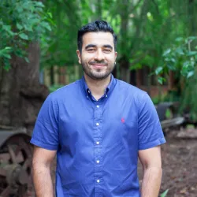
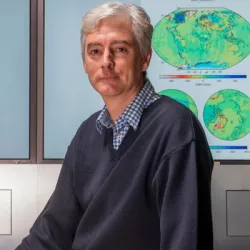

- / -
EMSC3025/6025: Remote Sensing of Water Resources
Dr. Sia Ghelichkhan
- / -
Remote Sensing of Water Resources
EMSC3025/6025
Dr. Sia Ghelichkhan
Welcome
Remote Sensing of Water Resources
Course Evolution
Historical Focus Areas:
- Previously titled Groundwater: Emphasised geochemistry and fine-scale groundwater processes, with aspects of hydrogeology.
- Later transitioned to Remote Sensing of Water.
Current Direction: This year marks my first as course convenor, and I will be delivering the course for the foreseeable future. The curriculum has been comprehensively restructured and now consists of three core modules:
- Hydrological Cycle
- Remote Sensing of Water Resources
- Groundwater
Our Relationship to Water
What is water to you?
Our Relationship to Water
What is water to Sia Ghelichkhan?
- I am an Earth scientist with a strong interest in fluid dynamics and numerical modelling.
- My research is primarily focused on developing numerical methods to better understand Earth processes involving fluid flow.
- These processes include groundwater flow, glacial-isostatic adjustment of the Earth’s surface, and mantle convection—each of which can be described as fluid dynamics under the right conditions.
- My main area of expertise is in data assimilation, aiming to improve our understanding of complex Earth systems through the integration of models and observations.
Course Objectives
What is this course about
- Demonstrate an understanding of the different components of water in the landscape and how they interact.
- Undertake quantitative analysis and interpretation of actual data related to water in Australia.
- Understand a variety of remote sensing satellite missions and how the observations inform water research.
- Critically evaluate technical reports and journal articles.
- Synthesise key concepts in hydrology and/or remote sensing to understand changes in water resources.
Structure of the course
Note: The actual content might change depending on our pace
| Week | Topic | Activities |
|---|---|---|
| 1 | Introduction | An introduction to the course, global and regional water cycle |
| 2 | Water Cycle -- Precipitation and Evapotranspiration | An overview of the principles of precipitation and evaporation as processes |
| 3 | Water Cycle -- Run off | An overview of the storage component of the water cycle that might appear as run-off |
| 4 | Water Geodesy -- Introduction and Measuring Precipitation Remotely | By Prof. Paul Tregoning -- Looking into foundations of satellite geodesy and how it can estimate precipitation |
| 5 | Water Geodesy -- Gravity and Surface Water observations | By Prof. Paul Tregoning -- Looking into estimates of gravitational change due to water movement |
| 6 | Groundwater -- Principles of Groundwater | Looking into the foundations and principles of groundwater |
| 7 | Groundwater -- Aquifers | Looking in more detail into different aquifer systems |
| 8 | Groundwater -- Theory of Groundwater Flow | Looking into the physics and numerics of groundwater flow |
| 9 | Paper Critique | |
| 10 | Groundwater -- Geology and Hydrogeology | |
| 11 | Misc. and Course Revision | |
| 12 | Exam |
Course Materials
- Canvas will provide all the necessary resources for this course.
- water-course.github.io is the course website. It is part of me experimenting with new ways of delivering the course.
- I will be providing additional resources in form of (AI generated)podcasts and links to articles and videos for the course.
- Use either Zulip or Canvas to ask questions and discuss the course material.
- I am looking forward to your feedback on the course.
Assessment
How is the course going to be assessed?
pie showData
"Assignments" : 40
"Paper Critique (Presentation)" : 10
"Paper Critique (Written)" : 20
"Exam" : 30| Assessment | |
|---|---|
| Assignments | 40% |
| Oral presentation | 10% |
| Written critique | 20% |
| Exam | 30% |
Assignments
Assignment I
- Continental Scale Water Cycle.
- Post Week 2
- Analysing precipitation record.
Assignment II
- Satellite Geodesy.
- Post week 5
- Changes in water storage estimated from space gravity missions.
Assignment III
- Groundwater component _ Post Week 7
- parameter analysis.
Note
- Assignments will be posted on canvas.
- All assignments will have the same grade.
Paper Critique
1. Presentations & Reports
- Each student presents a selected paper (10-minute talk). (Chosen from a list of papers, first come first serve)
- Submit a written report (max 10 pages).
2. Engagement
- Attend all presentations.
- Ask questions and take notes — these will inform your peer review.
3. Peer Review Assignment
- After all presentations, each student will be assigned a peer to review.
- Assignments are announced only after all talks are completed.
4. Peer Review Criteria
- Use notes and discussion points to guide your evaluation.
- 50% of grade from instructor’s evaluation of your peer review.
- 50% from your review of the peer’s work.
Schedule
EMSC3025 / EMSC6025 Timetable – Semester 2
| Time | Monday | Wednesday | Thursday | Friday |
|---|---|---|---|---|
| 09–10 | Lec A, R1.02, J8 | |||
| 11–12 | Lec B, R1.02, J8 | |||
| 12–13 | TutA, R1.02, J8 | |||
| 16–17 | ComB, R1.02, J8* | |||
| 17–18 | ComA, R1.02, J8 |
Note
[*] - At this point, we think ComB will be a drop-in session in my office on Fridays 1500-1600.
Lecturers
Dr. Sia Ghelichkhan (he/him)
siavash.ghelichkhan@anu.edu.au
Building J4 room L18
Anything except for the remote sensing module

Prof. Paul Tregoning (he/him)
paul.tregoning@anu.edu.au
Building J3 room 150
Satellite Geodesy

River Shaddock (they/she)
River.Shaddock@anu.edu.au
Computer Labs
Course Organisation
Tutorials
- Explanation/revision of maths techniques
- Sample exam-type questions
- Python examples
- Tutorials might explain how to do the assignments
Comp Labs
- Drop-in sessions to work on assignments.
- Demonstrator available to provide assistance
Class Representative
- The “voice” of the class
- Meets with Associate Director Education mid-semester and near the end of semester
- Provide feedback on arrangements and performance of lecturer/tutors
- AD Education passes feedback to us so that we can improve the course
Need a volunteer. Email me if interested.